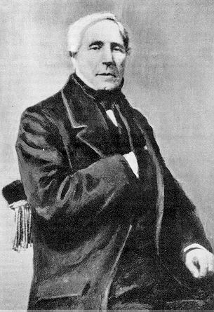

Un perfil parabólico y un caudal que crece con la cuarta potencia del radio
Duplicá el radio de un caño y, a igual diferencia de presión, el agua que pasa no se duplica: se multiplica por dieciséis. Esa sorpresa sale de una de las pocas soluciones exactas de las ecuaciones de Navier-Stokes, la del fluido que corre por un tubo empujado por una diferencia de presión. Es el flujo de Poiseuille, y explica desde las cañerías de una casa hasta la circulación de la sangre.
En un fluido sin viscosidad, la velocidad sería la misma en toda la sección del tubo [1]. Pero con viscosidad, el fluido pegado a la pared no se mueve: es la condición de no deslizamiento [2]. La capa que está al lado de la pared es frenada por ella, la siguiente es frenada por la primera, y así hacia adentro. Según OpenStax, en un fluido viscoso la velocidad es cero en las paredes y crece hasta un máximo en el centro del tubo [1]. OpenStax señala que ese perfil se ve hasta en la llama de un mechero de Bunsen, aunque la viscosidad del gas sea chica [1].
David Tong, de la Universidad de Cambridge, resuelve las ecuaciones de Navier-Stokes para un tubo circular de radio R con un gradiente de presión constante [2]. Con la condición de no deslizamiento en la pared, la velocidad resulta [2]:
Es una parábola: cero en la pared, máxima en el centro. El signo menos dice que el fluido corre de la presión alta hacia la baja [2]. Tong la llama flujo de Hagen-Poiseuille [2].
Integrando la velocidad sobre toda la sección se obtiene el caudal. OpenStax lo escribe así [1]:
La ley dice cosas razonables: el caudal crece con la diferencia de presión y baja con la viscosidad y con el largo del tubo [1]. Lo sorprendente es la cuarta potencia del radio. Según OpenStax, cualquier cambio en el radio tiene un efecto enorme: si se duplica el radio, la resistencia baja 2⁴ = 16 veces [1]. En un ejemplo de OpenStax, un conducto de aire acondicionado que pasa de 18 a 9 cm de diámetro reduce su caudal al 6,25 % del original [1].
Por qué cuatro: la cuarta potencia sale de dos efectos que se multiplican. Un tubo más ancho tiene más área por donde pasar, y eso da r². Pero además, en un tubo más ancho el centro está más lejos de las paredes que lo frenan, y el fluido de adentro corre más rápido, y eso da otro r². Juntos, r⁴ (un razonamiento a partir del perfil parabólico).
Según OpenStax, la ley lleva el nombre del científico francés J. L. Poiseuille (1799–1869), que la dedujo intentando entender el flujo de la sangre en el cuerpo [1]. Por eso la cuarta potencia importa tanto en medicina: un pequeño estrechamiento de un vaso sanguíneo aumenta mucho su resistencia (un razonamiento a partir de la ley). La física de la circulación está en el flujo sanguíneo.

Solo para flujo laminar: OpenStax aclara que la ley vale para el flujo laminar de un fluido incompresible [1]. Si el flujo se vuelve turbulento, la resistencia aumenta muchísimo [1]. Cuándo pasa eso lo dice el número de Reynolds. Tong muestra además la versión plana, entre dos placas quietas, que también tiene un perfil parabólico [2].
El flujo de Poiseuille es la solución exacta para un fluido viscoso que corre por un tubo: una parábola de velocidades, cero en la pared y máxima en el centro. El caudal que da crece con la cuarta potencia del radio, y por eso un caño o una arteria un poco más angostos dejan pasar mucho menos fluido. Es una de las leyes de la física más útiles en ingeniería y en medicina.
Pregunta para la comunidad: Si una arteria se estrecha un 20 % de su radio, ¿cuánto tiene que aumentar la diferencia de presión para que pase la misma cantidad de sangre? Hacé la cuenta con la ley de Poiseuille.